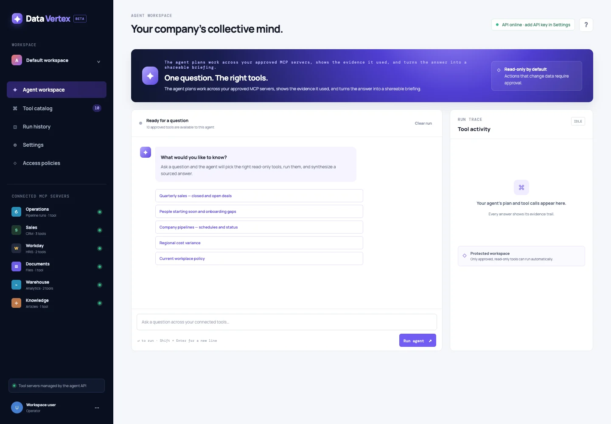

Platform architecture
End-to-end design for lakehouse, streaming, and governed data products. Reusable frameworks, clear system boundaries, and durable decision records.
I architect data platforms, ship applied-AI systems, and lead engineers from technical design to reliable production at scale.
Distributed systems / Data platforms / Applied AI & agents / Technical leadership
Staff-level engineering across data platforms, applied AI, and the systems that make delivery repeatable.
End-to-end design for lakehouse, streaming, and governed data products. Reusable frameworks, clear system boundaries, and durable decision records.
MCP servers, agent workspaces, and tool orchestration that connect models to enterprise context. Shipped live at DataVertex.
Monitoring APIs and metadata governance across thousands of pipelines. Observability, SLOs, and cost visibility built into the platform.
Design reviews, engineering standards, and mentoring. Set technical direction and unblock teams to ship with confidence.
Three case studies covering data architecture, platform software, and applied AI.
Batch and streaming ingestion, governed data, and reusable engineering frameworks for commerce operations.
Monitoring APIs and centralized metadata governance for a global manufacturing data estate.
A public MCP implementation connecting source code, documentation, and Databricks metadata.
Technical depth across commerce,
healthcare, and manufacturing.
An MCP workspace for asking questions across connected tools, exploring a tool catalog, and following agent activity through run traces.
Explore DataVertex (opens in a new tab)Explore the workspace freely. Agent runs require an API key in Settings.

Open to Staff / Lead Software Engineering roles across data platforms, applied AI, and forward-deployed engineering.